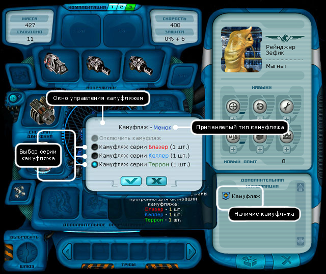
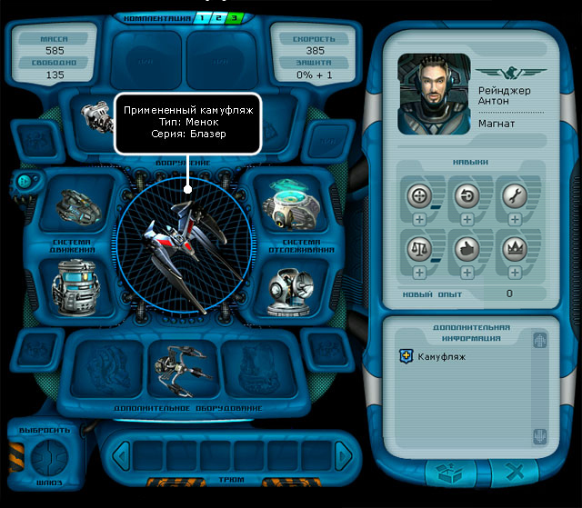
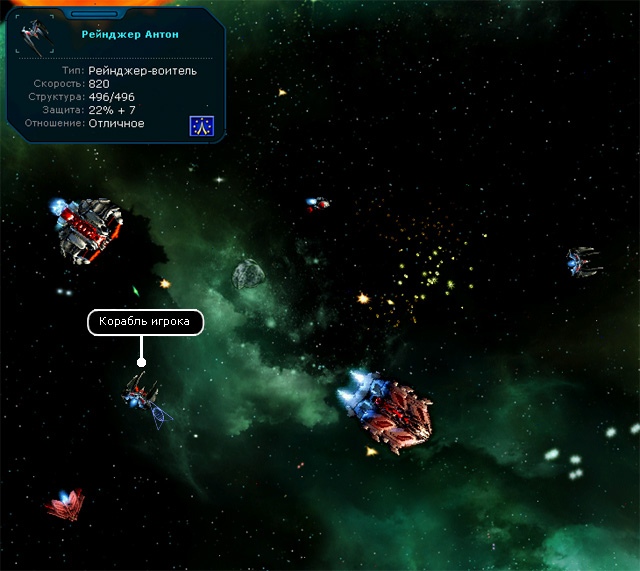

| Камуфляж (К) На пиратской базе приобретаются специальные заряды, которые можно активировать в любой момент. Примечание. После покупки камуфляжа в информационном окне корабля появится значок Чтобы включить камуфляж: 1. В окне корабля необходимо кликнуть правой кнопкой мыши по корпусу или нажать клавишу K.  2. В появившемся окне управления камуфляжем выбрать серию камуфляжа (прим. при наличии нескольких серий). 3. Подтвердить включение. Корпус рейнджера становиться доминаторским.  Примечание. Тип применяемого камуфляжа зависит от размера корпуса корабля. После включения камуфляжа корабли доминаторов не проявляют к кораблю игрока агрессии.  Чтобы выключить камуфляж: 1. В окне корабля необходимо кликнуть правой кнопкой мыши по корпусу или нажать клавишу K. 2. В появившемся окне управления камуфляжем выбрать позицию "отключить камуфляж". 3. Подтвердить выключение. После активации камуфляжа игрок не имеет возможность вымогать деньги и требовать груз. Окружающие корабли относятся к игроку негативно. На вас не нападают доминаторы, соответствующие типу активного камуфляжа. При проявлении агрессии к доминаторам камуфляж остается, но ваше присутствие становится известным. |